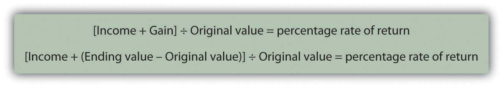

You want to choose investments that will combine to achieve the return objectives and level of risk that’s right for you, but how do you know what the right combination will be? You can’t predict the future, but you can make an educated guess based on an investment’s past history. To do this, you need to know how to read or use the information available. Perhaps the most critical information to have about an investment is its potential return and susceptibility to types of risk.
Returns are always calculated as annual rates of return, or the percentage of return created for each unit (dollar) of original value. If an investment earns 5 percent, for example, that means that for every $100 invested, you would earn $5 per year (because $5 = 5% of $100).
Returns are created in two ways: the investment creates income or the investment gains (or loses) value. To calculate the annual rate of return for an investment, you need to know the income created, the gain (loss) in value, and the original value at the beginning of the year. The percentage return can be calculated as in Figure 12.8 "Calculating Percentage Return".
Figure 12.8 Calculating Percentage Return
Note that if the ending value is greater than the original value, then Ending value − Original value > 0 (is greater than zero), and you have a gain that adds to your return. If the ending value is less, then Ending value − Original value < 0 (is less than zero), and you have a loss that detracts from your return. If there is no gain or loss, if Ending value − Original value = 0 (is the same), then your return is simply the income that the investment created.
For example, if you buy a share of stock for $100, and it pays no dividend, and a year later the market price is $105, then your return = [0 + (105 − 100)] ÷ 100 = 5 ÷ 100 = 5%. If the same stock paid a dividend of $2, then your return = [2 + (105 − 100)] ÷ 100 = 7 ÷ 100 = 7%.
If the information you have shows more than one year’s results, you can calculate the annual return using what you learned in Chapter 4 "Evaluating Choices: Time, Risk, and Value" about the relationships of time and value. For example, if an investment was worth $10,000 five years ago and is worth $14,026 today, then $10,000 × (1+ r)5 = $14,026. Solving for r—the annual rate of return, assuming you have not taken the returns out in the meantime—and using a calculator, a computer application, or doing the math, you get 7 percent. So the $10,000 investment must have earned at a rate of 7 percent per year to be worth $14,026 five years later, other factors being equal.
While information about current and past returns is useful, investment professionals are more concerned with the expected returnThe return expected for an investment based on its average historical performance. Statistically, it is the mean or average of the investment’s past performance. for the investment, that is, how much it may be expected to earn in the future. Estimating the expected return is complicated because many factors (i.e., current economic conditions, industry conditions, and market conditions) may affect that estimate.
For investments with a long history, a strong indicator of future performance may be past performance. Economic cycles fluctuate, and industry and firm conditions vary, but over the long run, an investment that has survived has weathered all those storms. So you could look at the average of the returns for each year. There are several ways to do the math, but if you look at the average return for different investments of the same asset class or type (e.g., stocks of large companies) you could compare what they have returned, on average, over time. Figure 12.9 "S&P 500 Average Annual Return" shows average returns on investments in the S&P 500, an index of large U.S. companies since 1990.
Figure 12.9 S&P 500 Average Annual ReturnBased on data from Standard & Poor’s, Inc., http://www2.standardandpoors.com/spf/xls/index/MONTHLY.xls (accessed November 24, 2009).

If the time period you are looking at is long enough, you can reasonably assume that an investment’s average return over time is the return you can expect in the next year. For example, if a company’s stock has returned, on average, 9 percent per year over the last twenty years, then if next year is an average year, that investment should return 9 percent again. Over the eighteen-year span from 1990 to 2008, for example, the average return for the S&P 500 was 9.16 percent. Unless you have some reason to believe that next year will not be an average year, the average return can be your expected return. The longer the time period you consider, the less volatility there will be in the returns, and the more accurate your prediction of expected returns will be.
Returns are the value created by an investment, through either income or gains. Returns are also your compensation for investing, for taking on some or all of the risk of the investment, whether it is a corporation, government, parcel of real estate, or work of art. Even if there is no risk, you must be paid for the use of liquidity that you give up to the investment (by investing).
Returns are the benefits from investing, but they must be larger than its costs. There are at least two costs to investing: the opportunity cost of giving up cash and giving up all your other uses of that cash until you get it back in the future and the cost of the risk you take—the risk that you won’t get it all back.
Investment risk is the idea that an investment will not perform as expected, that its actual return will deviate from the expected return. Risk is measured by the amount of volatility, that is, the difference between actual returns and average (expected) returns. This difference is referred to as the standard deviationIn finance, the statistical measure that calculates the frequency and amount by which actual returns differ from the average or expected returns.. Returns with a large standard deviation (showing the greatest variance from the average) have higher volatility and are the riskier investments.
As Figure 12.9 "S&P 500 Average Annual Return" shows, an investment may do better or worse than its average. Thus, standard deviation can be used to define the expected range of investment returns. For the S&P 500, for example, the standard deviation from 1990 to 2008 was 19.54 percent. So, in any given year, the S&P 500 is expected to return 9.16 percent but its return could be as high as 67.78 percent or as low as −49.46 percent, based on its performance during that specific period.
What risks are there? What would cause an investment to unexpectedly over- or underperform? Starting from the top (the big picture) and working down, there are
Economic risks are risks that something will upset the economy as a whole. The economic cycle may swing from expansion to recession, for example; inflation or deflation may increase, unemployment may increase, or interest rates may fluctuate. These macroeconomic factors affect everyone doing business in the economy. Most businesses are cyclical, growing when the economy grows and contracting when the economy contracts.
Consumers tend to spend more disposable income when they are more confident about economic growth and the stability of their jobs and incomes. They tend to be more willing and able to finance purchases with debt or with credit, expanding their ability to purchase durable goods. So, demand for most goods and services increases as an economy expands, and businesses expand too. An exception is businesses that are countercyclical. Their growth accelerates when the economy is in a downturn and slows when the economy expands. For example, low-priced fast food chains typically have increased sales in an economic downturn because people substitute fast food for more expensive restaurant meals as they worry more about losing their jobs and incomes.
Industry risks usually involve economic factors that affect an entire industry or developments in technology that affect an industry’s markets. An example is the effect of a sudden increase in the price of oil (a macroeconomic event) on the airline industry. Every airline is affected by such an event, as an increase in the price of airplane fuel increases airline costs and reduces profits. An industry such as real estate is vulnerable to changes in interest rates. A rise in interest rates, for example, makes it harder for people to borrow money to finance purchases, which depresses the value of real estate.
Company risk refers to the characteristics of specific businesses or firms that affect their performance, making them more or less vulnerable to economic and industry risks. These characteristics include how much debt financing the company uses, how well it creates economies of scale, how efficient its inventory management is, how flexible its labor relationships are, and so on.
The asset classA kind of investment distinguished by its uses and market (e.g., stock, bonds, fine art, real estate, currency). that an investment belongs to can also bear on its performance and risk. Investments (assets) are categorized in terms of the markets they trade in. Broadly defined, asset classes include
Within those broad categories, there are finer distinctions. For example, corporate stock is classified as large cap, mid cap, or small cap, depending on the size of the corporation as measured by its market capitalization (the aggregate value of its stock). Bonds are distinguished as corporate or government and as short-term, intermediate-term, or long-term, depending on the maturity date.
Risks can affect entire asset classes. Changes in the inflation rate can make corporate bonds more or less valuable, for example, or more or less able to create valuable returns. In addition, changes in a market can affect an investment’s value. When the stock market fell unexpectedly and significantly, as it did in October of 1929, 1987, and 2008, all stocks were affected, regardless of relative exposure to other kinds of risk. After such an event, the market is usually less efficient or less liquid; that is, there is less trading and less efficient pricing of assets (stocks) because there is less information flowing between buyers and sellers. The loss in market efficiency further affects the value of assets traded.
As you can see, the link between risk and return is reciprocal. The question for investors and their advisors is: How can you get higher returns with less risk?
Investment risk is exposure to